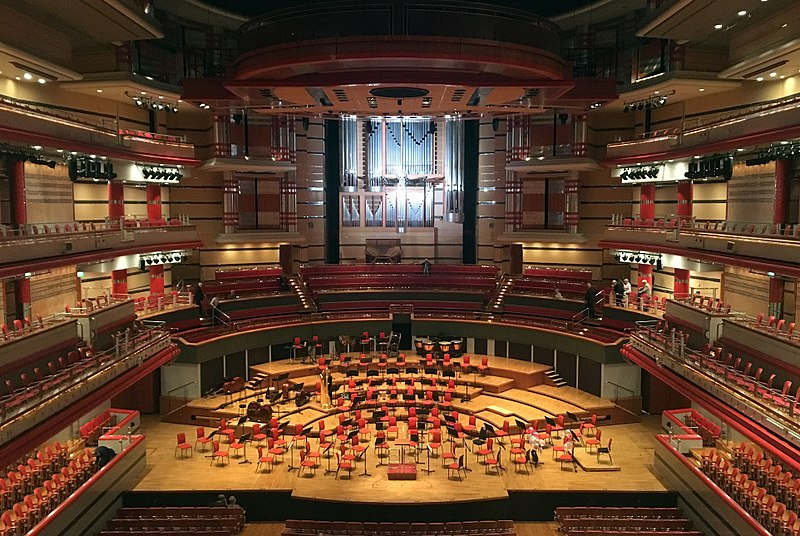
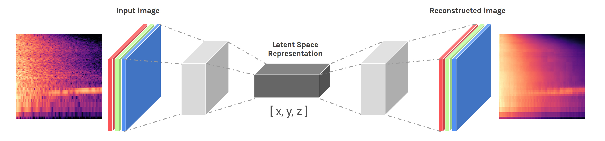
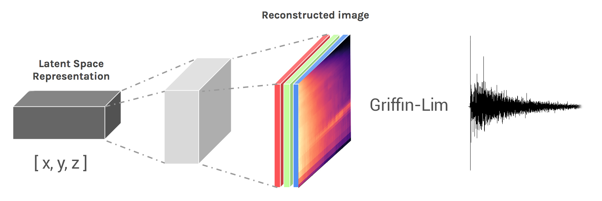
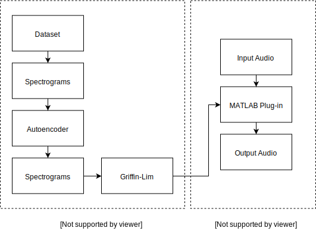
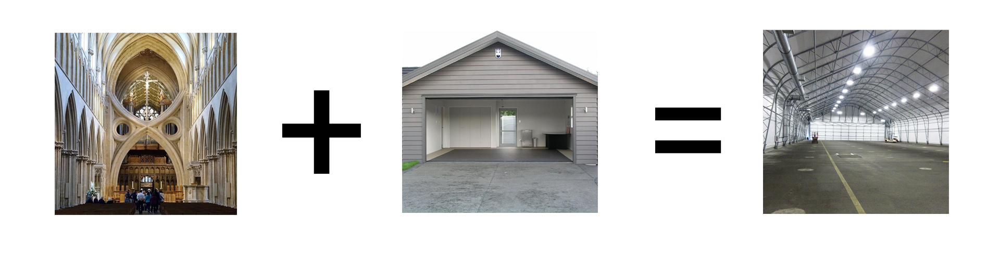

NeuralReverberator
AES MATLAB Plugin Student Competition
October 19th, 2018 - 145th AES Convention - New York, New York
Christian Steinmetz
Clemson University
Holcombe Department of Electrical and Computer Engineering
Department of Performing Arts, Audio Technology Concentration
What is it?
Deep learning driven
convolutional reverb plug-in

VST plug-in running in REAPER DAW
Convolutional reverb
Deep Autoencoder
How does it sound?
Dry
Short reverb
Long dark reverb
Strange delay
Dataset
~2,000 impulse responses

Truncated to 2 seconds in length
Downsampled to 16 kHz
Open AIR Library, Greg Hopkins, C4DM, and others
Autoencoders
Spectral Autoencoder
Phase Reconstruction
Signal estimation from modified short-time Fourier transform
D. Griffin and Jae Lim
MATLAB Plug-in
Architecture
Signal Processing
Latent Space
Stereo Width
Pre-Delay
Filtering
Resampling
Latent Space

Stereo Width
Autoencoder trained on mono impulse responses
Width control uses different impulse responses for Left and right channel
dsp.FrequencyDomainFIRFilter System object
Pre-Delay
Delay the onset of the reverb signal
dsp.VariableFractionalDelay System object
Filtering
Second order highpass and lowpass filters
filter() function
Resampling
Impulse responses generated at 16khz sampling rate
Allows resampling to 32kHz, 44kHz, 48kHz, and 96kHz
dsp.FIRRateConverter
Future Directions
Latent space arithmetic

Unsupervised Representation Learning with Deep Convolutional Generative Adversarial Networks
Alec Radford, Luke Metz, Soumith Chintala
Impulse response parallel
WaveNet autoencoder architecture

 @csteinmetz1
@csteinmetz1